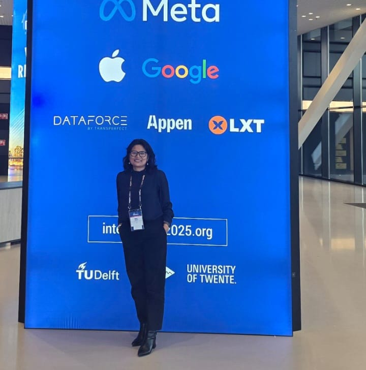

Affiliate Research Scientist at the Beckman Institute, UIUC, working with Prof. Mark Hasegawa-Johnson on dysarthric speech recognition, LLM-based ASR error correction, and semantic evaluation for accessible AI.

Interspeech 2025 · Rotterdam
I am a Research Scientist and computational linguist working at the intersection of accessibility, speech AI, and language understanding. My work focuses on making automatic speech recognition systems reliable for people with dysarthria and other speech differences — a problem that combines deep technical challenge with direct human impact.
As an Affiliate Research Scientist at the Beckman Institute, University of Illinois Urbana–Champaign, I collaborate with Prof. Mark Hasegawa-Johnson on the Speech Accessibility Project. My recent contributions include SemScore, a semantic evaluation metric that achieves 0.890 correlation with human judgments — surpassing WER, BERTScore, and BLEURT — and an uncertainty-based correction gate that prevents harmful LLM edits while maintaining zero new errors across seven open-source models.
Before UIUC, I spent seven years at IIT Guwahati, where my doctoral work addressed ontology expansion and lexical knowledge graphs for low-resource Indian languages. I hold an M.Tech from Gauhati University (CGPA 9.01) and have published at NAACL, Interspeech, ICASSP, and ACM TALIP.
Research takes me across continents — from Rotterdam for Interspeech to Guwahati and back. Here are some moments from the journey.
Open to research collaborations, industry roles in NLP & Speech AI, and conversations about accessible AI and deep tech startups.